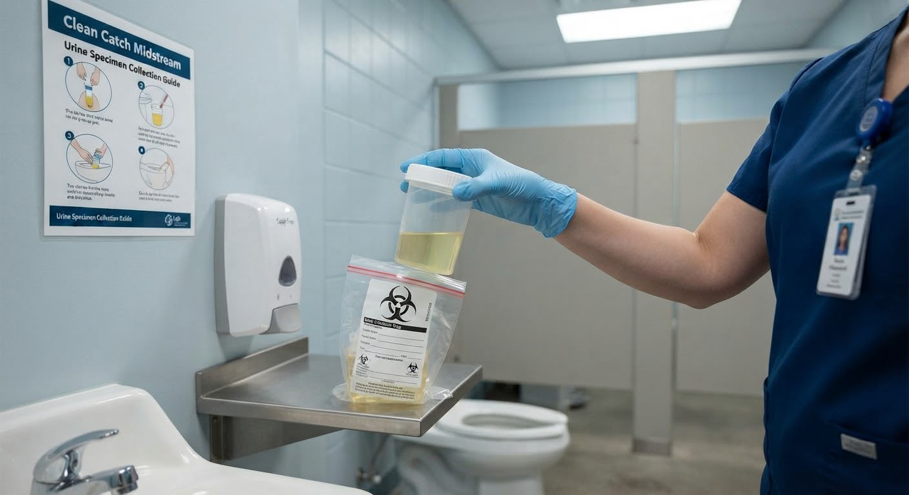

Urine Specimen Collection
Learn the basic principles of collecting and labelling a urine specimen.

Quick overview
Urine specimen collection obtains a sample for laboratory or point-of-care testing.
Why is it important?
Correct collection and labelling help maintain specimen quality and patient safety.
Equipment
Step-by-step guide
Identify
Confirm the patient and required specimen.
Use the approved patient-identification process and check the test requested.
Collect
Collect the specimen using the required method.
Use the collection method specified for the requested test.
Label
Label the specimen correctly.
Follow local specimen-labelling requirements before transport.
Send
Transport the specimen appropriately.
Follow the laboratory's current handling and transport requirements.
Safety and precautions
Documentation
Document relevant findings or actions according to the applicable clinical documentation requirements.